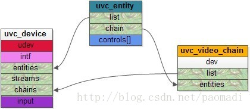

uvc_scan_device
可以看到这些Unit和Terminal是如何组建起来的
从代码来看，正常来说，Ouput Terminal一般是第一个VC头之后的部分；
所有的Chain被添加再
dev->chains，结构类似于这种；
个人感觉这里就是每个节点往下看都是一个链路，所以看上去有很多个链路；
参考文档
代码分析
uvc_scan_device
static int uvc_scan_device(struct uvc_device *dev)
{
struct uvc_video_chain *chain;
struct uvc_entity *term;
list_for_each_entry(term, &dev->entities, list) {
if (!UVC_ENTITY_IS_OTERM(term))
continue;
/* If the terminal is already included in a chain, skip it.
* This can happen for chains that have multiple output
* terminals, where all output terminals beside the first one
* will be inserted in the chain in forward scans.
*/
if (term->chain.next || term->chain.prev) // 如果entity已经初始化了，就不处理
continue;
chain = uvc_alloc_chain(dev); // 申请一个chain，分配uvc视频链内存(有多少个输入Terminal就有多少个uvc_video_chain)
if (chain == NULL)
return -ENOMEM;
term->flags |= UVC_ENTITY_FLAG_DEFAULT;
if (uvc_scan_chain(chain, term) < 0) {
kfree(chain);
continue;
}
uvc_trace(UVC_TRACE_PROBE, "Found a valid video chain (%s).\n",
uvc_print_chain(chain));
list_add_tail(&chain->list, &dev->chains);
}
if (list_empty(&dev->chains))
uvc_scan_fallback(dev);
if (list_empty(&dev->chains)) {
uvc_printk(KERN_INFO, "No valid video chain found.\n");
return -1;
}
return 0;
}
uvc_scan_chain
static int uvc_scan_chain(struct uvc_video_chain *chain,
struct uvc_entity *term)
{
struct uvc_entity *entity, *prev;
uvc_trace(UVC_TRACE_PROBE, "Scanning UVC chain:");
entity = term;
prev = NULL;
while (entity != NULL) {
/* Entity must not be part of an existing chain */
if (entity->chain.next || entity->chain.prev) {
uvc_trace(UVC_TRACE_DESCR, "Found reference to "
"entity %d already in chain.\n", entity->id);
return -EINVAL;
}
/* Process entity */
if (uvc_scan_chain_entity(chain, entity) < 0)
return -EINVAL;
/* Forward scan */
if (uvc_scan_chain_forward(chain, entity, prev) < 0)
return -EINVAL;
/* Backward scan */
prev = entity;
if (uvc_scan_chain_backward(chain, &entity) < 0)
return -EINVAL;
}
return 0;
}